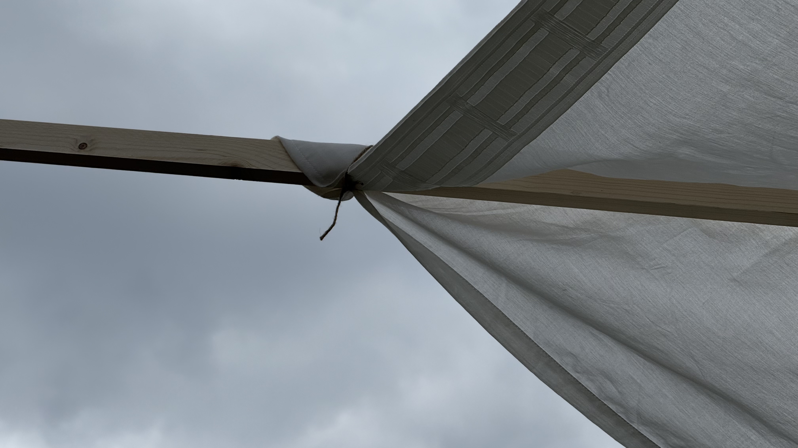
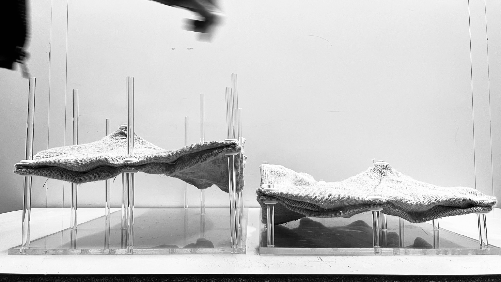
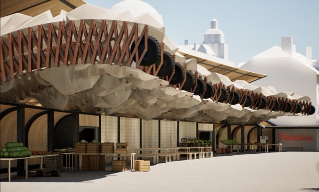
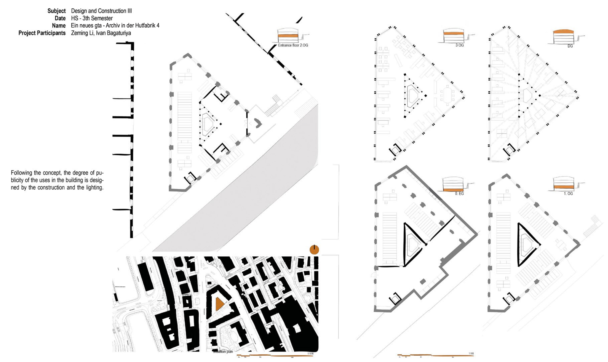
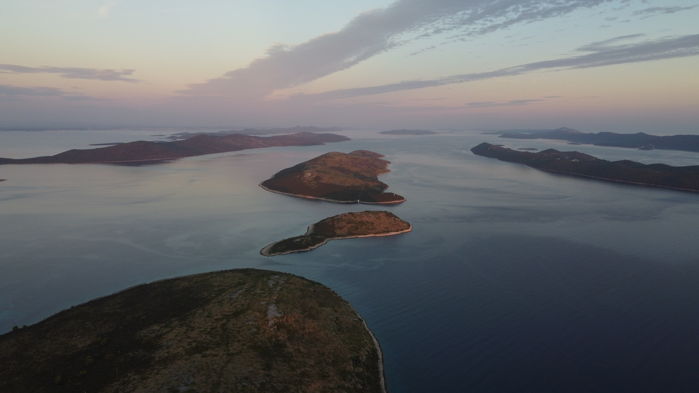

I.A.B
Ivan Bagaturiya
Architect
FULL PORTFOLIO
Selected works
8 projects

I.A.B
Architect
FULL PORTFOLIO
Selected works
8 projects
0056 / 01
2025
Project
This project shows how a parametric tool can keep a sinusoidal brick wall buildable before the brick size is known.
Software

0055 / 02
2025
Project
This project shows how ten slats, a rope, and a sheet of textile can become a lighthouse in 45 minutes.


0054 / 03
2025
Project
This project shows how computational design can turn an underground parking garage into a concert hall.
Software


0052 / 04
2024
Project
This project shows how mycelium and parametric form-finding can turn soft textile into a structural vault.
Software


0051 / 05
2024
Project
This project shows how parametric architecture can turn a noisy parking lot into an adaptable urban stage.
Software

0050 / 06
2024
Project
This project shows how 36 analog exposures can turn a changing room into a continuous archive of space, time, and memory.


0013 / 07
Project
Project description not yet available.

0010 / 08
Project
An evolving aerial archive that reveals familiar landscapes from an unfamiliar point of view.

